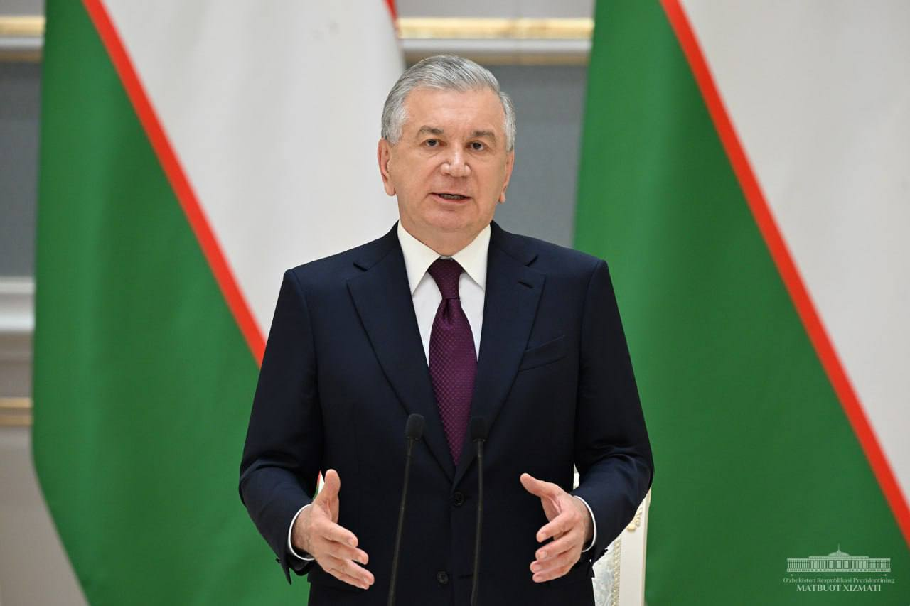
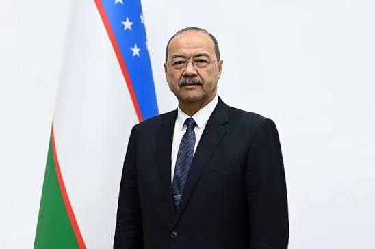
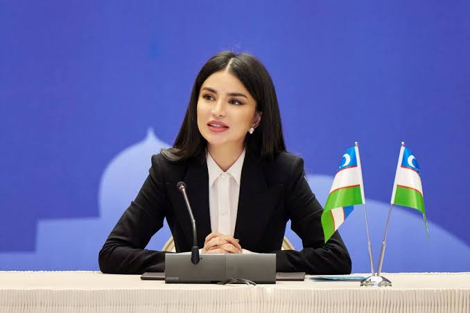
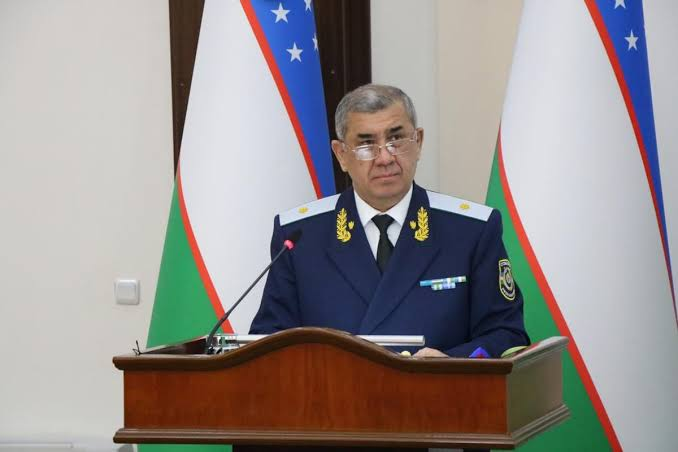

Mamlakatimiz boshqaruvida faoliyat yuritayotgan yetakchi rahbarlar

O'zbekiston Respublikasi Prezidenti
2016-yildan mamlakat rahbari, iqtisodiy va ijtimoiy islohotlar dasturining muallifi.

Bosh vazir
2016-yildan O'zbekiston Vazirlar Mahkamasi rahbari, hukumat faoliyatini muvofiqlashtiradi.

Prezident Administratsiyasi rahbari
2025-yil iyundan lavozimda, strategik yo'nalishlar va islohotlar nazoratiga mas'ul.

Bosh prokuror
Prokuratura tizimida ko'p yillik tajribaga ega, qonun ustuvorligini ta'minlashga mas'ul.
Mamlakatimizdagi so'nggi voqealar, ijtimoiy va iqtisodiy yangiliklar bilan tanishing
Batafsil →
Davlat organlaridagi bo'sh ish o'rinlari va lavozimlarga tanlov haqida ma'lumot
Batafsil →
Davlat siyosati, islohotlar va qonunchilikdagi o'zgarishlar haqida so'nggi ma'lumotlar
Batafsil →
Fuqarolarning huquq va majburiyatlari bo'yicha bepul maslahat xizmati
Batafsil →